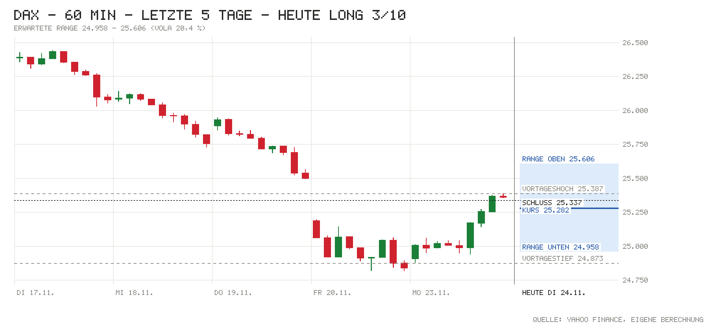

Tagesentscheidung ab 09:04 bis 17:30 Uhr
Den Ausschlag geben der beste US-Tag seit April 2025 (Nasdaq 100 +6,86 % nach Jensen Huangs Rückkehr zu Nvidia), stabile US-Futures, die Chip-Rally in Japan, Korea und Taiwan, fallendes Öl und ein schwächerer Euro. Wichtigstes Gegenargument: Der DAX hat gestern mit +2,15 % schon viel vorweggenommen, die Indikation liegt mit 25.282 unter dem Vortagesschluss und unter dem X-Dax von 7:16 Uhr (25.394), der große Trend ist Bear und die Fed-Erhöhung im Dezember ist voll eingepreist – darum nur 3/10 (eigene Einschätzung).
- Kurs um 09:04
- 25.282
- Erwartete Range
- 24.958 – 25.606
- Eingepreist (Tagesoption)
- ±1,29 %
Einschätzung vom Kurs um 09:04 (Median der Indikationen L&S, J.P. Morgan, UBS) bis zum Xetra-Schluss. Range = ±1 σ für die restliche Handelszeit aus der DAX-Tagesoption (ca. 68 %). Keine Anlageberatung.
Chart

Signale
| Signal | Wirkung | Stand und Einordnung |
|---|---|---|
| Vorgaben USA | Rückenwind | Montag: S&P 500 +4,73 %, Nasdaq 100 +6,86 %, Dow +3,01 % – bester Tag seit April 2025, Nvidia rund +31 % nach Huangs Wiedereinsetzung. Futures jetzt S&P +0,19 %, Nasdaq +0,18 %: Die Gewinne halten. |
| Eröffnung & erste Minuten | Gegenwind | Indikation 25.282 (−0,22 % zum Xetra-Schluss 25.337,27); um 7:16 Uhr lag der X-Dax noch bei 25.394 (+0,2 %). Eröffnung und Hoch/Tief zum Abruf n/v. Die Vorbörse bröckelt. |
| Asien & China | Rückenwind | Nikkei +3,91 % (Nachholeffekt nach Feiertag), Kospi ca. +6 %, Taiex ca. +9 % (dpa-AFX). China nur seitwärts: Shanghai +0,27 %, CSI 300 +0,14 %, Hang Seng −0,77 %. |
| Datenüberraschungen | Neutral | Ifo-Geschäftsklima um 10:00 noch offen (Prognose 90,5 · zuvor 90,2). Letzte US-Daten: Erstanträge 203K vs. 198K, Verbraucherstimmung 51,5 vs. 51,0 – ohne klare Richtung. |
| Zinserwartung | Gegenwind | Fed 09.12.: 107 % für +25 Bp. (voll eingepreist), Januar 63 %, März 62 %. EZB-Einlagensatz 2,50 %. Die Straffung deckelt Bewertungen. |
| Renditen | Neutral | Bund 10J 3,28 % (unverändert), US 10J 4,93 % live (+1 Bp.); auf Wochensicht US 10J −19 Bp. Stabil, aber hoch. |
| Kreditstress | Rückenwind | FRED n/v; Ersatz: HYG +0,25 %, LQD +0,23 % am Montag – Anleihe-ETFs erholt, kein akuter Stress. |
| Öl & Dollar | Rückenwind | Brent 86,77 USD (−2,91 %, Yahoo; dpa-AFX: 88,78 USD, −0,59 USD), EUR/USD 1,0910 (−0,56 %). Billigeres Öl und ein schwächerer Euro helfen Exporteuren. |
| Trend | Gegenwind | DAX unter 21-Tage- (25.989) und 50-Tage-Schnitt (25.610), knapp über dem 200-Tage-Schnitt (24.999). Großer Trend Bear seit 17.11. – gegen die Long-Richtung. |
| Positionierung | Rückenwind | COT 17.11.: Hebel-Fonds im S&P-Future netto −234.978 Kontrakte. Viele Shorts liefern Treibstoff für weitere Eindeckungen (eigene Einschätzung). |
| Unternehmensnachrichten | Neutral | Keine großen Meldungen der Schwergewichte gefunden. KI-nahe Werte (SAP, Siemens Energy, Infineon) dürften der Nvidia-Stimmung folgen. |
| Profi-Sicht | Neutral | ING THINK: Dollar droht nach der Überraschungsstärke zu überschießen; bei Anleihen vorsichtig wegen Fiskalrisiken. Kein klares Aktiensignal. |
| Termine bis 17:30 | Neutral | Ifo 10:00, US-Hauspreise 15:00, Conference Board Verbrauchervertrauen 16:00. Kein Großereignis im Fenster. |
Großer Trend (3-Monats-Momentum)
- Stand
- Bear
- Seit
- 17.11. (7 Wechsel in 3 Monaten)
- Schluss 23.11.
- −3,61 % vs. Zins +0,61 %
- Heute dreht es bei Schluss über
- 26.529 (jetzt −4,7 %)
Mit dem Kurs von jetzt bliebe das Signal Bear; eine Wende ist heute praktisch ausgeschlossen. Bull = Rendite der letzten 3 Monate über dem Geldmarktzins, Bear = darunter. Regel: Rendite der letzten 63 Handelstage (≈ 3 Monate) gegen den EZB-Einlagensatz, jeden Tag zum Schluss neu entschieden, Zeitrahmen Tageskerzen (nach Antonacci 2014, dort monatlich über 12 Monate; täglich entschieden dreht es öfter falsch). Keine Anlageberatung.
Bilanz von gestern
23.11.: Long 4/10 – Richtung richtig, +442 Punkte (Kurs zur Notiz 24.895, Schluss 25.337, Hoch 25.387, Tief 24.873). Range ±408 verfehlt (Bewegung +442); bisher 50 % von 14 Tagen getroffen (Soll ca. 68 %). Gesamt seit Start: 14 Einschätzungen, Richtung richtig 36 %, Summe −724 Punkte bis Schluss (Schnitt −52).
Marktlage
| Markt | Stand | Veränderung |
|---|---|---|
| DAX (Schluss 23.11.) | 25.337,27 | +2,15 % |
| DAX (Eröffnung heute) | n/v | n/v |
| DAX (jetzt, Kurs zur Notiz 09:04) | 25.282 | −0,22 % |
| S&P 500 (Schluss 23.11.) | 7.237,17 | +4,73 % |
| Nasdaq 100 (Schluss 23.11.) | 26.746,10 | +6,86 % |
| Dow Jones (Schluss 23.11.) | 49.595,31 | +3,01 % |
| US-Futures (S&P / Nasdaq) | 7.268,00 / 26.857,00 | +0,19 % / +0,18 % |
| Nikkei 225 | Eröffnung 57.009,99 → Schluss 58.644,63 | +3,91 % |
| Shanghai Composite | Eröffnung 3.567,84 → Schluss 3.548,37 | +0,27 % |
| CSI 300 | Eröffnung 4.004,04 → Schluss 3.963,82 | +0,14 % |
| Hang Seng | Eröffnung 22.627,29 → aktuell 22.212,38 | −0,77 % |
| EUR/USD | 1,0910 | −0,56 % |
| Brent (USD/Barrel) | 86,77 | −2,91 % |
| Gold (USD/Unze) | 3.621,20 | −0,83 % |
| VIX (Schluss 23.11.) | 26,62 | −25,83 % |
China: Festland und Hongkong starteten fester, gaben die Gewinne aber ab; während Korea und Taiwan von der Chip-Rally profitierten, ging es in China und Hongkong leicht abwärts (dpa-AFX), einen eigenen Auslöser fand ich nicht. Japan holte nach dem Feiertag am Montag nach. Brent laut dpa-AFX 88,78 USD – die Yahoo-Zahl kann einen Kontraktwechsel enthalten. Farben bei EUR/USD, Brent, Gold und VIX nach Wirkung auf Aktien. Die DAX-Eröffnung lag zum Datenabruf (Yahoo, bis 15 min verzögert) noch nicht vor.
Anleihen & Zinsen
| Markt | Stand | Veränderung |
|---|---|---|
| Bund 2J | 3,07 % | −1 Bp. (vs. Bundesbank 23.11.: 3,08 %) |
| Bund 10J | 3,28 % | ±0 Bp. (Vortagesschluss 3,28 %) |
| US-Treasury 2J | 4,69 % (live) | +6 Bp. (offiziell 23.11.: 4,63 %) |
| US-Treasury 10J | 4,93 % (live) | +1 Bp. (Vortagesschluss 4,92 %); 1 Woche (offiziell): −20 Bp. |
| Fed, Sitzung 09.12. | Erhöhung um 25 Bp. erwartet | 107 % (voll eingepreist); Jan. 63 %, März 62 % |
| EZB-Einlagensatz | 2,50 % | zuletzt +25 Bp. (16.09.) |
| Euro-Hochzins-Aufschlag | n/v (FRED) | n/v |
| US-Hochzins (Ersatz: HYG) | 76,52 USD | +0,25 % (Tag) |
Bund: CNBC-Livekurs, 2J gegen Bundesbank-Vortageswert. US-1-Wochen-Vergleich aus der offiziellen Treasury-Kurve (23.11.: 4,92 % vs. 5,12 %).
Termine heute
- 10:00 Deutschland: Ifo-Geschäftsklima – Prognose 90,5 · zuvor 90,2; Lage – Prognose 89,2 · zuvor 88,8; Erwartungen – Prognose 92,0 · zuvor 91,6
- 12:00 UK: CBI Handelsumfrage – Prognose −27 · zuvor −10
- 15:00 USA: Hauspreise (FHFA) – Prognose +0,2 % · zuvor +0,3 %; Case-Shiller 20 Städte – Prognose 2,7 % · zuvor 2,7 %
- 16:00 USA: Conference Board Verbrauchervertrauen – Prognose 92,4 · zuvor 91,7; Richmond-Fed Industrie – Prognose −2 · zuvor −2
- Keine Quartalszahlen von DAX-Werten.
Nachrichten zu DAX-Werten
- Gesamtmarkt: Nach sechs Verlusttagen erholte sich der DAX am Montag um 2,15 %; vom Rekord bei gut 27.000 Punkten Mitte November liegt er noch mehr als 6 % entfernt. QC-Partners-Manager Thomas Altmann sieht den KI-Trade wieder im Aufwind, es müsse sich aber zeigen, ob weitere Käufe folgen (dpa-AFX). Einschätzung: Anschlusskäufe möglich, aber nach +2 % ist Luft für Gewinnmitnahmen.
- KI-/Chipwerte (Infineon, SAP, Siemens Energy): Keine eigenen Meldungen; der Halbleiter-Index in den USA stieg gestern um fast 14 %, Asiens Chipwerte folgen heute. Einschätzung: positiv für Infineon, die Rally ist aber eine Panik-Umkehr, kein neuer Trend (eigene Einschätzung).
- Umfeld Technologie (außerhalb DAX): UBS halbiert das Kursziel für Aixtron auf 24 Euro und rät zum Verkauf; JPMorgan stuft Nemetschek auf „Underweight“ ab (Ziel 50 Euro). Einschätzung: zeigt, dass Analysten bei Tech-Bewertungen skeptisch bleiben.
Profi-Sicht & Positionierung
- ING THINK: FX Daily: Dollar may be heading into overshoot territory – nach der überraschenden Dollarstärke dürfte der Widerstand im Dollar-Index bei 104,60 halten; einen nachhaltigen Bruch von EUR/USD unter 1,0880 hält ING für unwahrscheinlich, eine echte Dollar-Schwäche erst nach Fed (9.12.) und US-Inflation (10.12.). Rates Spark: Jensen who? – US-10J hält sich um 4,9 % dank Öl unter 90 USD, ING bleibt wegen Fiskalrisiken in Deutschland, Frankreich und den USA vorsichtig bei Staatsanleihen.
- Positionierung (COT, Stand 17.11.): Hebel-Fonds im S&P-Future netto −234.978 Kontrakte (+68.082), Vermögensverwalter netto +895.049 (−19.081). Im Nasdaq-Future Hebel-Fonds netto −10.928 (−24.895). Euro: Hebel-Fonds netto −76.587 (−4.911). 10-jährige Treasuries: Hebel-Fonds netto −2,48 Mio. (−181.116). Der Stand liegt vor dem Crash vom 20.11. und der Rally vom 23.11.
Quellen
- Marktdaten der Skripte: Amber Terminal/Yahoo Finance (Kurse, Futures), onvista (Indikationen L&S, J.P. Morgan, UBS; VDAX), Eurex (DAX-Tagesoption ODAP), Nasdaq (Kalender), CNBC (Bund- und US-Kurve), Bundesbank, US-Treasury, CFTC (COT), EZB-Datenbank, ING THINK (Artikelliste)
- onvista/dpa-AFX: Aktien Frankfurt Ausblick – Moderates Plus nach Tech-Erholungsrally vom Vortag (24.11.2026)
- onvista/dpa-AFX: Börsentag auf einen Blick – Nach Erholungsrally leicht im Plus (24.11.2026)
- CNBC: Tech stocks rally after Nvidia board approves Jensen Huang's return as CEO (23.11.2026)
- NBC News: Stocks surge in best day since 2025 after Jensen Huang returns to Nvidia
- finanzen.net: Aixtron-Aktie sackt ab – Kursziel halbiert
- ING THINK: FX Daily – Dollar may be heading into overshoot territory (24.11.2026)
- ING THINK: Rates Spark – Jensen who? (23.11.2026)